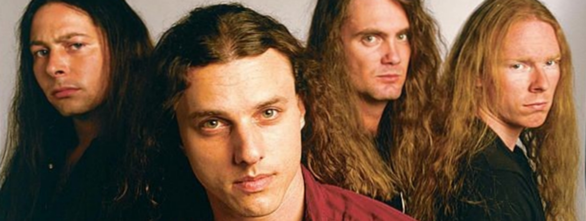
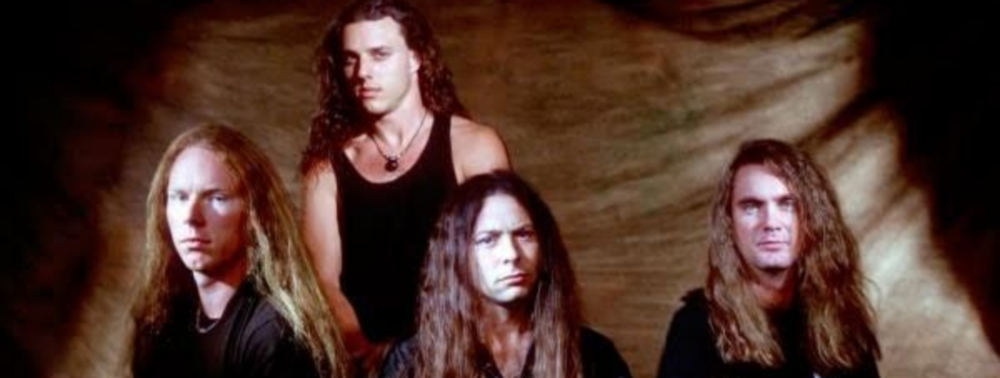

1 / 3

Caption Text
2 / 3

Caption Two
3 / 3

Caption Three
País: Estados Unidos
Origem: Orlando, Flórida
Período em atividade:
1983–2001
Gênero(s):
Death metal,
metal progressivo,
death metal melódico,
death metal técnico.
Gravadora(s):
Nuclear Blast, Roadrunner,
Relativity, Combat.
Considerada uma das bandas mais influentes do death metal, a história do Death teve início quando o guitarrista e vocalista Chuck Schuldiner e o guitarrista Rick Rozz se juntaram ao baterista e vocalista Barney "Kam" Lee para formarem primeiramente o Mantas. Inspirados principalmente por bandas como Venom e Slayer, o trio começou a forjar as suas primeiras composições, enviando-as a várias "tape-traders" internacionais. Numa destas sessões foi produzida uma demo intitulada Death by Metal de 1984, composta por cinco canções, que, apesar do seu registro deveras bruto, alçou a banda como uma das mais promissoras da América dentro do death metal, cuja banda em evidência era o Possessed, proveniente de San Francisco.
Embora tenham gozado de um efêmero reconhecimento, os integrantes do Mantas presumiram que não eram recebidos com o devido crédito, como revelou Chuck:
"Muitas pessoas nos subestimaram, nós recebemos um monte de m**** da cena de bandas locais; todas as bandas dos arredores (Orlando) acharam que nós eramos pura m****. Nós eramos barulhentos naquela época, mas estávamos colocando pra fora death metal bruto, era muito para a compreensão das pessoas."
Nesse ínterim, o Mantas acabou por se dissolver em 1984.
Posteriormente, Chuck Schuldiner intentando perfazer canções mais pesadas e rápidas, anunciou os seus planos para formar uma banda denominada Death. Reconciliado com Rozz e Lee, Chuck iniciou a elaboração de novas demos, dentre as quais se originária a legendária "Reign of Terror", a qual, definitivamente, impingiu o Death como referência no death metal mundial, denotando-os, assim, o caráter do seu real potencial como banda. Alcançava o Death, dessa forma, o "seu lugar no mapa". Após várias breves aparições ao vivo (comumente em bares) a banda concentrou-se em erigir seu caminho ao primeiro petardo.
Lançado em julho de 1987, Scream Bloody Gore, teve grande projeção entre a crítica especializada. Esse álbum é considerado um marco dentro do estilo e influenciou grande parte das bandas que aderiram ao gênero anos mais tarde. Músicas como "Zombie Ritual" e "Baptized In Blood" são até hoje muito reverenciadas pelos fãs. No ano seguinte Terry Butler (baixo) e Bill Andrews (bateria) entram no grupo e lançam Leprosy, outro álbum considerado essencial para fãs do gênero. A evolução de Schuldiner como músico e compositor era notável, o som do Death ficava cada vez mais técnico e veloz, assim como a produção também havia melhorado bastante, se comparado ao álbum anterior. Destacam-se faixas como "Pull The Plug", Forgotten Past" e a faixa título. Bastante conhecidos no meio Underground, o Death inicia a turnê de divulgação, passando pela Europa, onde tiveram alguns problemas referentes a organização, e na América do Norte (No México, a banda contou com o reforço do guitarrista Paul Masvidal), consagrando-os como uma das melhores bandas de Metal ao vivo da época.
Logo após, Chuck contratou o virtuoso guitarrista James Murphy, que junto a banda, gravaria o álbum Spiritual Healing, lançado em fevereiro de 1990, produzido por Scott Burns. Chuck Schuldiner cada vez mais se mostrava um grande compositor, e a técnica do Death crescia gradualmente a cada lançamento. Chuck também mudou a temática das letras, dessa vez apostando mais em críticas sociais. Em 1990, às vésperas de uma turnê europeia, Schuldiner decidiu não viajar, alegando que no último minuto, ele sentiu que a turnê não foi devidamente organizada. Andrews e Butler continuaram com a turnê pela Europa como "Death" para cumprir as obrigações contratuais da banda, e recrutaram os roadies Walter Trachsler (guitarra) e Louie Carrisalez (vocal) para substituir Schuldiner, para grande espanto deste. Schuldiner tomou medidas legais e Butler e Andrews foram demitidos da banda. Desde então, Chuck havia decidido que não trabalharia mais com músicos fixos no Death, apenas músicos contratados.
Logo após, Chuck contatou o exímio baixista Steve DiGiorgio, do Sadus, e recrutou o Sean Reinert (bateria) e Paul Masvidal (guitarra), do Cynic, para gravarem o álbum Human. Considerado um dos primeiros álbuns de death metal técnico, Human mostrou o Death em um nível técnico nunca visto antes, com melodias ainda mais complexas e intrincadas, sendo ainda mais progressivo que os álbuns anteriores e com uma produção muito mais cristalina. Human foi o álbum melhor sucedido comercialmente do Death até então, e dele saiu o primeiro e histórico videoclipe da banda, "Lack Of Comprehension", dirigido por David Bellino. O clipe teve boa veiculação pela MTV e outros meios, uma das raras vezes em que grandes meios de comunicação divulgariam uma banda de metal extremo. Devido a conflitos com a agenda do Sadus, DiGiorgio não pode sair em turnê com o Death, dando lugar ao baixista Skott Carino, que além de participar da turnê de divulgação do álbum entre 1991 e 1992, também participou do clipe da "Lack Of Comprehension".
Em 1993, Masvidal e Reinert deixaram a banda e retornaram ao Cynic. Para substituí-los, Schuldiner chamou o habilidoso baterista Gene Hoglan, que havia acabado de sair do Dark Angel, e o guitarrista Andy LaRocque, que tocara com King Diamond. Com esse Line-up, foi lançado o álbum Individual Thought Patterns. Considerado pelos fãs de longa data o melhor álbum da banda, o Death havia chegado ao seu auge, musicalmente e tecnicamente. Ainda mais progressivo e poderoso, e com uma produção digna de bandas de Metal Mainstream como Metallica e Iron Maiden, o álbum contava com grandes composições como "Overactive Imagination", "Trapped In A Corner", e a música mais conhecida do Death, que deu origem segundo videoclipe da banda, "The Philosopher". Individual Thought Patterns levara o Death ao seu auge comercial e os tornaram muito populares. O videoclipe de "The Philosopher" até apareceu em um episódio de Beavis & Butt-head em 1994. No entanto, o Death sairia da Roadrunner Records, distribuidora dos álbuns na Europa, após um contrato que durou oito anos. Após outra longa turnê, muito bem sucedida, com o guitarrista Ralph Santolla substituindo LaRocque, que teve compromissos com King Diamond, em 1995, era hora de gravar um novo álbum. Chuck contratara os músicos Kelly Conlon e Bobby Koelble, para substituir DiGiorgio e LaRocque. Gene Hoglan permaneceria com a banda. Então, em 1995, é lançado Symbolic. Diversos fãs mantem-se em dúvidas e dividem opiniões até hoje, para descobrir qual álbum é melhor, se este ou o anterior. Contando com músicas como "Crystal Mountain", "Perennial Quest", "Zero Tolerance" e a faixa-título, o álbum rapidamente tornou-se um clássico do estilo. Para a turnê, Chuck contratou o baixista Brian Benson, mas esse deixou a banda antes mesmo desta começar, devido a conflitos com Schuldiner. Logo após, Chuck iniciaria o seu projeto de Metal Progressivo, Control Denied, e o Death iniciaria um hiato. No entanto, Schuldiner conseguiu um contrato com a Nuclear Blast para ambas bandas.
Em 1997, no entanto, o Death retorna mais uma vez, para lançar o último álbum da carreira, The Sound Of Perseverance, contando com Richard Christy (bateria), Shannon Hamm (guitarra) e Scott Clendenin (contra-baixo). Lançado pela Nuclear Blast em 1998, The Sound Of Perseverance mostrava um Death ainda mais técnico e progressivo (alguns materiais foram re-aproveitados do Control Denied), e com Chuck cantando de uma forma diferente - ao invés dos tradicionais guturais, Chuck optaria por um vocal mais rasgado e agudo. Destacam-se composições como "Scavenger of Human Sorrow", "Spirit Crusher", "A Moment of Clarity", e o cover de "Painkiller", do Judas Priest. A turnê de divulgação seguiu com o mesmo Line-up que gravou o álbum.
Depois do álbum e duas turnês de suporte, Schuldiner colocou o Death de lado para se dedicar ao Control Denied com Christy e Hamm. Clendenin foi trocado por Steve DiGiorgio, e o vocalista Tim Aymar. Embora o line-up e estilo das músicas do Control Denied fossem em grande parte semelhantes ao do Death, Schuldiner criou o Control Denied, porque ele estava descontente com os vocais menos agressivos para o Death. No entanto, em vez de trair o que a banda Death significava e como soava para os fãs, ele optou por criar uma nova banda: "Para mim, é apenas uma questão de evolução, fazendo do jeito certo, ou não", afirmou. Quando Schuldiner terminou de gravar o álbum de estréia do Control Denied, ele foi diagnosticado com câncer no cérebro, forçando a banda a cancelar os planos para uma turnê pelos EUA e Canadá. Após um pesado tratamento, a condição de Schuldiner melhorou, mas o tumor o deixou em um estado muito vulnerável e enfraquecido. Logo após, contraiu pneumonia e foi internado. Em 13 de dezembro de 2001, Chuck recebeu alta e voltou para casa, onde, uma hora depois, veio a falecer, dando fim de vez as atividades da banda.
Chuck Schuldiner − vocal, guitarra
(1983-2001)
Shannon Hamm − guitarra
(1996-2001)
Scott Clendenin − baixo
(1996-1997, 1998-2001)
Richard Christy − bateria
(1996-2001)
Rick Rozz (Frederick DeLillo)
(1983-85, 1987-89)
Andy LaRocque (Anders Allhage)
(1993)
Paul Masvidal
(1989, 1990–1992)
Bobby Koelble
(1994-1995)
James Murphy
(1989–1990)
Matt Olivo
(1985)
John Hand
(1987)
Steve DiGiorgio
(1986, 1991, 1992–94,
1997–98)
Kelly Conlon
(1994-1995)
Skott Carino
(1991-1992)
Terry Butler
(1987-1990)
Scott Carlson
(1985)
Eric Meade
(1985)
John Hand
(1987)
Kam Lee (Barney Lee)
e vocais (1983−1985)
Bill Andrews
(1987−1990)
Gene Hoglan
(1993−1995)
Chris Reifert
(1986−1987)
Sean Reinert
(1991-1992)
Eric Brecht
(1985)